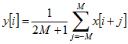
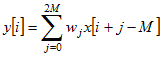
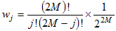
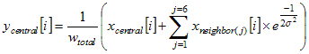
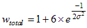
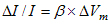
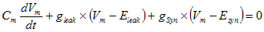
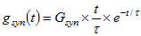

Author: Payne Chang
E-mail: paynechang@gmail.com
Contents
1. Introduction
2. PhotoZ and the hardware
3. Architecture of PhotoZ
4. User interface of PhotoZ
5. Digital signal processing
6. EPSP simulation
7. Illustration of object interactions by one example
8. Summary
Table 1. Classes and their functions
Table 2. External libraries
Publications Using PhotoZ
A flexible, fast, and user-friendly computer program to control instruments and analyze the collected data is important for any imaging experiment. The present voltage-imaging study generated a huge amount of data (usually a few gigabytes for one LTP experiment). PhotoZ is a powerful program to control a photodiode array and analyze the collected data.
Here is the link to the manual PDF file.
Please send an e-mail to Payne Chang if you are interested in PhotoZ, or have any comments or suggestions.
PhotoZ controls hardware and acquires data through calling functions in DAPIO32.lib. There are two DAP boards in the current configuration. A DAP 5400a acquires data from 8 analog inputs directly (including one signal from a patch-clamp amplifier) and 464 analog inputs from post-amplifiers, which receive signals from the photodiode array (PDA). A DAP3200e/214 sends TTL (transistor-transistor logic) outputs to shutter controllers, pulse generators (controlling stimulators), resets the post-amplifiers, and controls the gains of the post-amplifiers. The DAP 3200e/214 also sends a hardware trigger signal to the DAP 5400a to initiate data acquisition.
PhotoZ was developed for a photodiode array (PDA) system with the C++ programming language. It controls shutters, stimulators, post-amplifiers, and data acquisition processors (DAPs). It records optical signals from a photodiode array (464 channels) and one field potential (FP) signal from an amplifier (expandable to 8 channels). PhotoZ accomplishes these tasks through communication with DAPs by calling functions in DAPIO32.lib, a library provided with the DAPs (Microstar Laboratories).
PhotoZ controls two DAPs in the current version. A DAP 3200e/214 sends TTL (transistor-transistor logic) signals to control shutters, stimulators, and post-amplifiers. A DAP 5400a receives optical signals from post-amplifiers and the FP signal. In order to control these two DAPs, PhotoZ needs codes written in the language that DAPs can understand. DAPs' native language is DAPL.The procedure to communicate with DAPs is first connecting DAPs, then writing DAPL codes to files (*.dap files in the \PhotoZ folder), transferring the DAPL codes to the DAPs, starting tasks, acquiring data from the DAPs, and finally disconnecting the DAPs.
The best way to understand how the program communicates with the hardware is to modify one variable at a time, trigger an event, follow the function calls, and learn the interactions between them. After explaining the organization of PhotoZ, one example is discussed to illustrate how PhotoZ controls hardware and acquires data.
PhotoZ has 20 classes. Thirteen of them are global objects. Although the MainController object contains no local objects, it is at the first level because it manages other objects and handles the communication between them. Five of the global objects have local objects. Therefore, the architecture of PhotoZ can be viewed as a three-level organization.
C++ is an object-oriented programming (OOP) language. Therefore, PhotoZ first defines classes and then creates objects from classes. Figure 2 displays the classes and their relationships in PhotoZ (see also Table 1). There is one MainController object, which manages most interactions between objects. In addition to the MainController object, PhotoZ has twelve global objects. Five of them contain local objects and are discussed bellow.
The ArrayWindow object manages the content in the array window (Fig. 3). It contains 472 Diode objects. 464 of them display signals from photodiodes and 8 objects display analog inputs, such as field potentials. The ArrayWindow object also contains one Image object, which loads, manipulates, and displays a CCD image as the background in the array window (Fig. 3).
The ColorWindow object is in charge of rendering and displaying data characteristics in the map/movie window (Fig. 3). It contains 464 GridPoint objects, which are used to construct a three-dimensional map that displays several characteristics of the optical signals, including the spatial distribution of amplitudes, LTP, resting light intensities (RLI), and peak latencies. PhotoZ renders these figures with OpenGL in the map/movie window (Table. 2). In the movie mode, PhotoZ constructs the three-dimensional map and renders the amplitude distribution continuously. It can thus play a movie of signal propagation and reveal the dynamics of electrical activity in the slice.
The DapController object controls digital outputs of the DAP3200e/214. It currently has four DapChannel objects, which control four TTLoutputs (one to post-amplifiers (reset), one to the shutter, and two to the stimulators).The DapController object also controls the hardware trigger and the gain control of the post-amplifiers, which occupy two TTL outputs. This leaves two spare TTL outputs, which PhotoZ can use in the future.
The DataArray object stores data in memory and analyzes signal properties. It manages 472 Data objects, among them 464 Data objects handle optical signals and eight handle other analog inputs. The DataArray object acquires and manages memory (CPU cache or RAM) from the computer and assigns it to Data objects. The DataArray is in charge of calculation, processing, and comparison of properties returned by Data objects, and Data objects process and measure properties of signals from single channels. For example, one Data object measures the maximal amplitude of the signal from a photodiode, and the DataArray object then compares the maximal amplitudes from all Data objects and saves the maximum of them.
The SignalProcessor object is responsible for digital signal processing of signals. It contains one Filter object and one PolynomialFitting object. The PolynomialFitting object uses a third-degree polynomial function to fit the baseline of optical signals and correct the baseline drift (Fig. 4).The Filter object handles temporal filtering. There are two types of temporal filters, which are binomial and moving average filters. The SignalProcessor object also performs spatial filtering, using a two-dimensional Gaussian filter to reduce noise.
The Color object controls colors of traces and the color scalebars in the array window and the map/movie window. It contains four arrays of RGB objects. One RGB object array is in charge of assigning colors to traces.Three others are used to create the color scale bars (color scale 1, colors cale 2, and blue to red) for the array window and the map/movie window.
The graphic user interface can be divided into six main areas, the Array Window, the Menu Bar, the Acquisition Panel, the File Control Panel, the Main Panel, and the Versatile Panel. Each main area can have several tabs or other control widgets. The function of each control widget is described in the user manual.
The user interface of PhotoZ is created by FLTK (Table 2). The interface comprises six main areas (Fig. 3) and their properties are listed below. Detail descriptions of how to use the interface are described in the user manual.
There are 472 signals in the window with 464 of them from the PDA. Each diode signal is displayed at a specific location. The background of the window can be set according to a CCD image, maximal amplitudes, spike amplitude, resting light intensity, and etc.
There are three pull-down menus in the menu bar. The File menu can open a data file, create a folder, and exit the program. The Preference menu can save and load a preference file (*.pre). The Save menu can save the array window or the trace window to an image file.
The Acquisition Panel contains two tabs. The Acquisition tab controls the procedure of recording. The Analysis tab provides some routines for efficient data analysis.
This panel controls the slice number, the location number, the record number, and the trial number.
This panel contains five tabs. The Array tab controls the display of the Array Window. The DSP (digital signal processing) tab controls measurement settings, amplitude corrections, temporal filtering, and spatial filtering. The Baseline tab controls baseline correction. The Image tab controls the size and the position of the CCD image in the Array window. It also controls the input and output image formats. Finally, the Color tab controls the color scale bar in the Array Window.
There are three tabs in this panel. The Trace tab displays traces of selected diodes from the Array Window (selected by clicking the left button of your mouse at diode locations). It also controls the simulation of EPSP components. The DAP tab controls the settings of inputs and outputs of DAPs. The Map & Movie tab displays and controls the map/movie window.
During the development of PhotoZ, the design and coding of the graphical user interface was greatly accelerated by using a small program, FLUID (Fast Light User Interface Designer, http://www.fltk.org). The procedure to modify or expand the graphical user interface involves modifying or adding controls with FLUID, and then coding callback functions (the functions usually call subroutines of the MainController object), editing or creating a subroutine in the MainController object, and finally updating the user interface (for example, the Array window needs updating after changing the settings of temporal filtering). This procedure is usually tedious. However, with careful design and coding, the effort pays off when the user spends much less time configuring the software, acquiring data, and analyzing the data.
It is essential to extract physiological signals from recorded signals by signal processing when the recorded signals are distorted or the noise is large. The post-amplifiers are equipped with four-pole Bessel low-pass filters, whose cut-off frequencies are controlled by a TTL input from a pulse generator. This analog signal processing is necessary to prevent aliasing distortion and reduce high-frequency noise when the A/D converters of the DAPs sample the input signals. After analog signal processing, digital signal processing can perform the remaining processing tasks. PhotoZ performs three types of digital signal processing. They are baseline correction, temporal filtering, and spatial filtering, which are discussed below.
The black trace is the original recorded optical signal. Although the baseline drift is tiny (less than 1%), the signal is severely distorted (the physiological signal is less than 0.1%). PhotoZ ignores the period containing the physiological signal and fits the baseline with a third-degree polynomial function (green trace). The baseline drift is subtracted from the original optical signal, producing the red trace as the corrected signal.
Even a tiny drift in the optical signal leads to severe distortion because the voltage-imaging signal is so small (ΔI/I is on the order of 10-3). The circuits in post-amplifiers have an AC coupling feature, which can partially correct the baseline drift. However, the AC coupling also distorts the signals. To correct the baseline drift, PhotoZ uses a third-degree polynomial function to fit the baseline and correct the drift (Fig. 4).
PhotoZ provides two types of temporal low-pass filters, a moving average filter and a binomial filter. The moving average filter is faster. However, its performance is poorer in the frequency domain. The equation of the moving average filter follows,

where M is the width of the filter.
The binomial filter is close to a Gaussian filter when the width of the filter is wide. This filter has similar shapes in the time domain and the frequency domain. Therefore, the binomial filter performs well in both domains. However, the required computation power increases when the width of the filter increases. This is especially true when the sampling rate is high and a wider filter is required. The equation of the binomial filter follows.


PhotoZ uses a two-dimensional Gaussian filter to reduce spatial noise.The equation of the filter follows.


i indexes the time point. j indexes the six neighboring diodes. σ is the standard deviation of the Gaussian function. Diodes at the border of PDA have less than six neighbors so the sum is over fewer terms. In the analysis of optical data, signals from some diodes have a very bad baseline or noise. PhotoZ can ignore these diodes. In this situation, PhotoZ replaces the bad signal with the average of signals from the surrounding neighbors.
A. (Left) There are five elements in this model circuit simulating the EPSP component. Cm
is the membrane capacitance. Gleak is the leaking conductance and Eleak is the
reversal potential (-65 mV). Gsyn is the synaptic conductance, and Esyn is the
reversal potential. The value of Gsyn is time-dependentand calculated according to an α-function.
Vm is the membrane potential. (Right) These are values of the parameters that determine the
best fit to the EPSP component of the optical signal in B.
B. The time course of the simulated EPSP is determined by five parameters. The onset time controls the
latency. The amplitude determines the size. The time constant τ mainly determines the rising rate
and the ratio of Cm to gleak affects the falling rate. Finally, the ratio of gsyn
to gleak only weakly influences the time course of the simulated EPSP in a certain range.
During fitting, PhotoZ usually fixes the ratio of gsyn to gleak and searches a
four-dimensional parameter space repetitively to find a set of parameters, which results in the minimal
sum-of-square error between the simulated EPSP and the optical signal.
The voltage imaging signals reflect EPSPs with or without spikes. In order to assess the magnitudes of these two contributions, PhotoZ can fit the EPSP component with a simple RC circuit model and decompose the optical signals into EPSPs and spikes (Fig. 5). With absorbance voltage-sensitive dyes, the optical signal (ΔI/I) is proportional to the membrane potential change (ΔV) within the physiological range. Therefore, the relation between the optical signal and the membrane potential change can be represented as follows.

β is a constant, which is determined by the dye properties. To simulate the EPSP component of the optical signal, PhotoZ calculates the membrane potential (Vm(t)) by numerical integration of the following differential equation.

In the equation, Cm is the membrane capacitance, gleak is the membrane leakage conductance, Eleak is the reversal potential of the leakage conductance (-65 mV), gsyn is the synaptic conductance, and Esyn is the reversal potential of the synaptic conductance (0 mV). The synaptic conductance was modeled with an α-function.

t is time, and Gsyn and τ are free parameters. The time course of a simulated EPSP depends on τ, β, Gsyn, and the ratios of Cm to gleak and of Gsyn to gleak. Since β and Gsyn only affect the amplitude of an EPSP, they are incorporated into one variable, amp. Varying Gsyn/gleak in the range of 0.01 ~ 5.0 usually has little impact on the time course of Vm(t), so it is fixed at a constant value of 1.0 (Fig. 5). The best fit was determined by varying the onset time, τ , amp, and Cm/gleak to minimize the sum-of-square error. When calculating the error, PhotoZ ignores the period containing the spike.
Fig. 5B uses an optical signal to illustrate how each variable affects the fitting. The sample trace is best fitted by adopting the parameters shown on the right of Fig. 5A. The onset time determines the point when the EPSP starts. The amplitude controls the size of a simulated EPSP. The time constant of the α-function (τ) mainly affects the rising rate of the EPSP. The ratio of Cm to gleak predominantly controls the falling rate of the simulated EPSP. Finally, the last panel of Fig. 5B demonstrates that the ratio of gsyn to gleak only weakly affects the time course of the simulated EPSP in a certain range.
After clicking "Record" button, the GUI generates an event and calls the record()function in the MainController object. The function checks the "Schedule" box and determines whether to repeat the recording or not. If repetition is not required, it acquires one record and ends. If the "Schedule" box is checked, the function starts counting time and acquiring data. After finishing one record, the record() function checks whether the "RLI" box is checked. If it is checked, the function takes the RLI and saves the data to a file. After saving the data, the function increments the record number and checks whether the record number exceeds the maximum number of records. If it does not exceed the maximum number, the function keeps counting time and repeating data acquisition. If the record number exceeds the maximum, the function quits the loop and returns the control to the GUI.
The internal works of PhotoZ during a recording task is discussed below to demonstrate how objects in PhotoZ communicate with each other and how PhotoZ communicates with DAPs. When you click the "Record" button, it triggers an event and PhotoZ tells the DAPs to send TTL signals and record signals (Fig. 6).
First, use FLUID to open the GUI file, UserInterface.fl. Double-click the mainWindow if the main window is not shown. By double-clicking the "Record" button, a Fl_Button window appears. Click the C++ tab and you can see the callback function window. The callback function of the "Record" button calls the record() function of the MainController object, mc (mc->record()).That is, when the "Record" button is clicked, an event is triggered, which starts the callback function of the "Record" button. Then, the callback function asks mc to perform record().
The MainController object handles most communication between objects, so the GUI calls a function of the object. record() of mc is declared in the header file, MainController.h, and defined in MainControllerAcqui.cpp. Inside record(), PhotoZ first checks whether the "Schedule" box is checked. If it is not checked, PhotoZ calls acquiOneRecord() and acquires one record. If the box is checked, record() gets the interval between records by calling recControl->getIntRecords() and gets the maximum number of records by calling recControl->getNumRecords(). record() then saves the time and starts the first recording by calling acquiOneRecord().
After completing one record, PhotoZ checks whether the "RLI" box is checked. If it is checked, it takes a resting-light intensity by calling takeRli(). Then, record() saves the data to a file by calling saveData2File().
After saving the data, record() waits until the time for the next recording comes. During the waiting, record() keeps checking whether the "Schedule" box is unchecked or the "Stop" button is clicked. If either one of these two situations arises, PhotoZ stops recording. If none of these two situations occurs, PhotoZ increases the record number by calling increaseNo(RECORD) and keeps recording data until the maximum number of records has been reached. Among the functions inside record(), acquiOneRecord() is further discussed below to illustrate how PhotoZ controls DAPs.
The acquiOneRecord() function in the MainController object directly communicates with three objects. The RecControl object controls the procedure of recording and contains the information of the number of trials and the interval between trials. Thus, the acquiOneRecord()function asks the RecControl object for these information. The DapControl object is responsible for the communication with the DAPs. The acquiOneRecord() function asks it for the number of points in each trial in order to acquire a block of temporary memory to store the raw data from the DAP 5400a. The function then connects, resets, and sends codes in DAPL to the DAPs through the DapControl object. After these initiation steps, the acquiOneRecord() function acquires raw data from the DAP 5400a, also through the DapControl object. Then,the function sends the raw data to the DataArray object for rearrangement and storage. The acquiOneRecord() function also asks the DataArray object to load the data to the memory and process it. After that, the function plots the data, updates the GUI (not shown), and releases the DAPs. The function keeps acquiring data until it completes all trials. Finally, the acquiOneRecord() function releases the temporary memory, updates the GUI, and displays the average signals.
In the acquiOneRecord() function, PhotoZ first gets the information of the number of trials and the interval between trials from the recControl object, which are required for recording control. It then gets the number of points from the dapControl object. Since the raw data from the DAPs is sequential in time (the first data point is from diode 1, the second data point is from diode 2, ...., the 472nd data point is from analog input 8, the 473rd data point is from diode 1, the 474th data point is from diode 2, and so on), PhotoZ acquires a block of memory buffer to store the raw data from the DAPs so it can rearrange the data and save it later. Next, acquiOneRecord() enters a for loop to acquire each trial data. Inside the loop, PhotoZ keeps track of time and checks whether the "Stop" button is clicked.
During each trial, PhotoZ connects and resets the DAPs by calling setDAPs() and resetDAPs() of the object dapControl. It also creates two dap files required to communicate with DAPs by calling dapControl->createAcquiDapFile(), which creates "Record-3200 v5.dap" and "Record-5400 v5.dap" in the \PhotoZ folder. PhotoZ then sends the two files to the two DAPs by calling dapControl->sendFile2Dap(). After sending the dap files (written in DAPL), it is ready to start the data acquisition by calling dapControl->acqui().
The acqui() function takes a while to complete since it covers the whole data acquisition period and needs to wait until that the data transfer from the DAP5400a to the computer is completed. After that, PhotoZ rearranges and saves the data in the DataArray object by calling dataArray->arrangeData(). In order to process and display the recorded data, PhotoZ needs to load the recorded data to a block of memory in the DataArray object and process the data by calling dataArray->loadTrialData() and dataArray->process(). Inside the process() function, PhotoZ corrects the baseline drift and performs temporal and spatial filtering. At the end of each trial, PhotoZ updates the GUI and redraw the content.
After all trials are completed, PhotoZ releases the memory, which it acquires before data acquisition. Without releasing the buffer, PhotoZ would keep acquiring memory from the system and the computer could crash. It is useful to show the average signal after completing data acquisition. Therefore, PhotoZ loads the averaged data into the memory of the DataArray object and processes it. Finally, PhotoZ updates the GUI and redraw the content.
It is a challenge to write a program from scratch that controls hardware and performs most data analysis. PhotoZ has undergone four major revisions since the first version. After each major revision, there are several minor revisions. The current version of PhotoZ is 5.20. To control DAPs, the software designer needs to learn the language that the DAPs understand (DAPL) and to learn how to communicate with DAPs (DAPIO32.lib) (Table 2). To create the graphic user interface (GUI), the designer needs to search for a proper external library and learn to use it (PhotoZ uses FLTK). Although it is possible to create the GUI by using basic libraries in Windows, it is extremely tedious and inefficient. To load and manipulate CCD images and save rendered images in different image formats, external libraries (paintlib.lib) are required. Finally, PhotoZ uses OpenGL to render the images and movies in the map/movie window (opengl32.lib, fltkgl.lib).
PhotoZ is a program providing an integrated environment for voltage-imaging experiments with a photodiode array system. It controls instruments, records signals, analyzes the signals, and displays them. It is small but efficient and powerful. If you are interested in PhotoZ, or have any comments or suggestions, please send an e-mail to Payne Chang (paynechang@gmail.com).
|
Class name |
Functions |
|
MainController |
The main controller object handles most events and communications between objects. |
|
UserInterface |
The graphical user interface object handles inputs from the user and organizes the interface. |
|
ArrayWindow |
The array window object contains 472 diode objects and displays the data in the array window. |
|
Diode |
The diode object handles events of one diode. It also displays the trace and several properties as background. |
|
Image |
The image object controls and displays the CCD image in the array window. |
|
TraceWindow |
The trace window object displays traces, first derivative, simulated EPSPs, and time course of several properties. |
|
ColorWindow |
The color window object processes and displays rendered figures of several properties. It can also play movies showing the dynamics of optical signals. |
|
DapController |
The DAP controller object controls DAPs, which get inputs from the photodiode array and sends TTL outputs to several devices (shutters, stimulators, and etc). |
|
DapChannel |
This object controls one TTL output channel. |
|
DataArray |
The data array object controls and manages 472 data objects. |
|
Data |
The data object contains the raw and processed data from one channel. It also analyzes the data and stores the properties. |
|
FileController |
This object controls the procedures of saving and loading data. |
|
SignalProcessor |
It controls digital signal processing of the signal. |
|
Filter |
It performs temporal low-pass filtering of signals. |
|
PolynomialFitting |
This object uses three-degree polynomial functions to fit the baseline of signals and corrects the signal drift. |
|
RecControl |
This object controls the procedure of recording. |
|
WindowExporter |
This object saves the displayed data in image files (BMP, TIFF, PNG and JPEG). |
|
Color |
The color object controls and adjusts the colors of traces and color scale bars. |
|
GridPoint |
This object is used to construct a 3-D map, which is required to create the color map and movie in the color window object. |
|
RGB |
This object is used to set the colors of traces, diodes, and color scale bars. |
|
Library name |
Purpose |
Websites |
|
dapio32.lib |
Used to control DAPs. |
http://www.mstarlabs.com |
|
opengl32.lib |
Required to render figures in the map/movie window. |
http://www.opengl.org |
|
fltk.lib |
Used to construct the graphical user interface. |
http://www.fltk.org |
|
fltkgl.lib |
Required to use OpenGL in FLTK. |
http://www.fltk.org |
|
paintlib.lib |
Image input and output. |
http://www.paintlib.de |
|
DAPIO32.dll |
This dynamic link library is required to communicate with DAPs. |
http://www.mstarlabs.com |